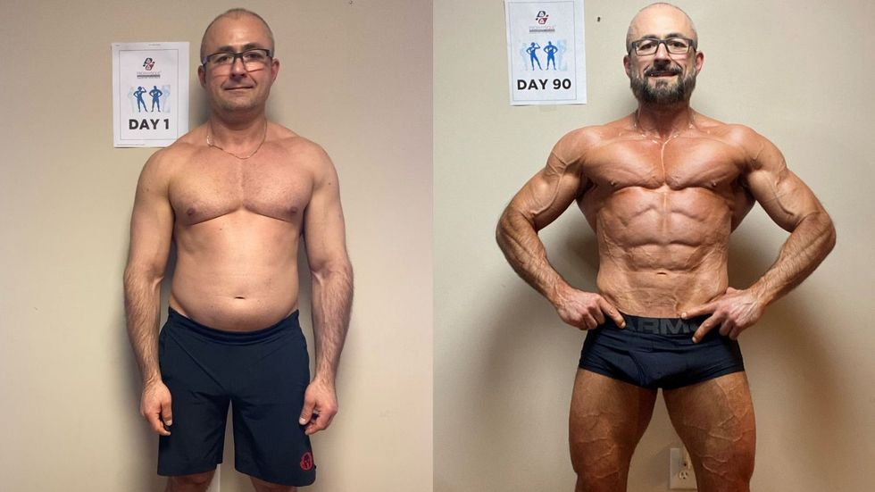

Before my coaching sessions, Bob, on the left, was the king of procrastination. His dreams lingered in the distant future, and his to-do list was more of a wish list. Fast forward to after my coaching, and witness the remarkable change on the right. Bob now tackles tasks head-on, a conqueror of procrastination. His productivity skyrocketed, and he's turned his dreams into tangible achievements.


On the left, meet Jake, a man with a mind that wandered like a lost puppy. Focus eluded him, and distractions were his constant companions. Enter my coaching sessions, and on the right, observe the newfound concentration. Jake now navigates through tasks with laser-like precision, a testament to his transformed focus. No more wandering thoughts only purposeful strides towards success.